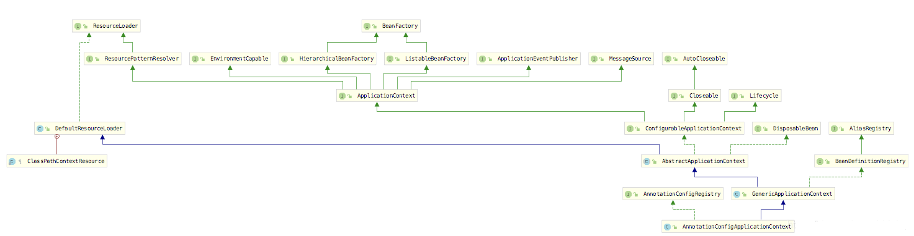
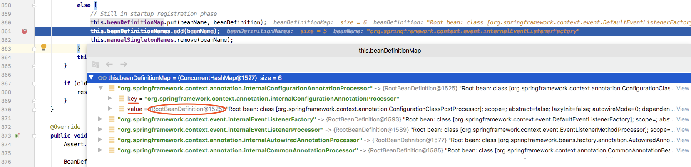
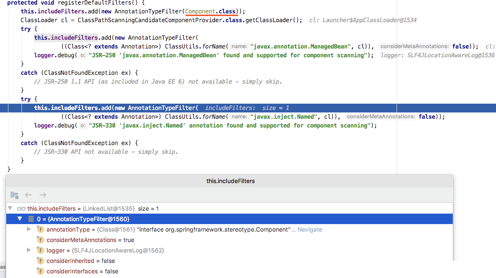
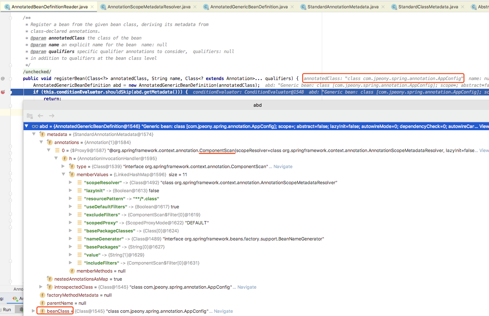
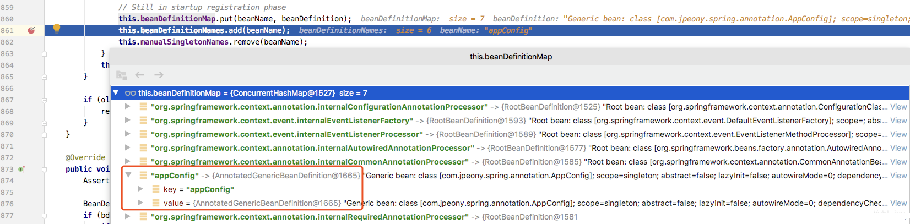

AnnotationConfigApplicationContext(注解方式)初始化
IOC容器注解方式实现概述
Spring注解方式减少了大量XML配置工作和代码复杂性，降低开发和维护成本。
常用的Spring注解@ComponentScan，@Service，@Autowired等，
Spring对这些注解都是怎么运行工作的，对应注解一放，功能轻飘飘实现了，有没有感觉很神奇？
使用用例
//@SpringBootApplication
@ComponentScan(excludeFilters = {@ComponentScan.Filter(type = FilterType.CUSTOM, classes = TypeExcludeFilter.class),
@ComponentScan.Filter(type = FilterType.CUSTOM, classes = AutoConfigurationExcludeFilter.class)})
public class Application {
public static void main(String[] args) {
// ConfigurableApplicationContext context = new SpringApplicationBuilder(Application.class).run(args);
// new AnnotationConfigApplicationContext("io.github.firehuo.spring");
new AnnotationConfigApplicationContext(Application.class);
}
}
主要就两种方式
- new AnnotationConfigApplicationContext("io.github.firehuo.spring");
- new AnnotationConfigApplicationContext(Application.class);
第一种不用在Application上加@ComponentScan注解，因为已经传入了扫描的路径；第二种需要加@ComponentScan注解，这个注解是从@SpringBootApplication复制出来的（白嫖的代码-_-）。
注解使用实例
我们在这里提出几个凝问，带着这几个问题去分析源码。
- @ComponentScan去扫描东西，扫描的是啥，把什么东西变成IOC容器需要的东西，然后注册到IOC容器？
- @Service注解的类，如何注册到IOC容器的？
- @Autowired是怎么像XML方式一样处理依赖关系的？
这里分析AnnotationConfigApplicationContext实现原理，理解了这个注解容器关于IOC的实现原理，以及@ComponentScan注解实现原理， 等你去看SpringBoot启动源码的时候，感觉相对比较容易些。
AnnotationConfigApplicationContext类图。

IOC后置处理器注入
AnnotationConfigApplicationContext有两种用法。
一种是传入@ComponentScan注解的类，另外一种是直接传入要扫描的包。
直接传入扫描包相对比较简单，上来就开始扫描。
public AnnotationConfigApplicationContext(String... basePackages) {
this();
scan(basePackages);
refresh();
}
传入@ComponentScan注解类相对比较麻烦些，需要绕一圈，才能调到scan()方法。
这里挑传入@ComponentScan注解类分析，因为我们基本都是使用@ComponentScan，
直接传入扫描包只是@ComponentScan注解类实现方式一个子集，理解了@ComponentScan，
自然就理解了直接传入扫描包的方式。
从构造器看起！
public AnnotationConfigApplicationContext(Class<?>... annotatedClasses) {
this();
register(annotatedClasses);
refresh();
}
上来看到了一个醒目的refresh()方法，莫慌，等会再看他，先去找水。
这里跟XML方式有区别，XML方式的BeanFactory是在refresh()#obtainFreshBeanFactory()方法里面去获取的， 而注解方式则是通过父类构造器直接构建的，一上来就创建容器，默认用的DefaultListableBeanFactory。
public class AnnotationConfigApplicationContext extends GenericApplicationContext implements AnnotationConfigRegistry {
private final AnnotatedBeanDefinitionReader reader;
private final ClassPathBeanDefinitionScanner scanner;
public class GenericApplicationContext extends AbstractApplicationContext implements BeanDefinitionRegistry {
private final DefaultListableBeanFactory beanFactory;
@Nullable
private ResourceLoader resourceLoader;
private boolean customClassLoader = false;
private final AtomicBoolean refreshed = new AtomicBoolean();
/**
* Create a new GenericApplicationContext.
* @see #registerBeanDefinition
* @see #refresh
*/
public GenericApplicationContext() {
this.beanFactory = new DefaultListableBeanFactory();
}
到这里，IOC容器有了，接着往下看 ，this()：
public AnnotationConfigApplicationContext() {
// 注解BeanDefinition读取器
this.reader = new AnnotatedBeanDefinitionReader(this);
// ClassPath扫描器
this.scanner = new ClassPathBeanDefinitionScanner(this);
}
AnnotatedBeanDefinitionReader
追踪到AnnotationConfigUtils#registerAnnotationConfigProcessors()：
/**
* Register all relevant annotation post processors in the given registry.
* @param registry the registry to operate on
* @param source the configuration source element (already extracted)
* that this registration was triggered from. May be {@code null}.
* @return a Set of BeanDefinitionHolders, containing all bean definitions
* that have actually been registered by this call
*/
public static Set<BeanDefinitionHolder> registerAnnotationConfigProcessors(
BeanDefinitionRegistry registry, @Nullable Object source) {
// 获取BeanFactory
DefaultListableBeanFactory beanFactory = unwrapDefaultListableBeanFactory(registry);
if (beanFactory != null) {
if (!(beanFactory.getDependencyComparator() instanceof AnnotationAwareOrderComparator)) {
beanFactory.setDependencyComparator(AnnotationAwareOrderComparator.INSTANCE);
}
if (!(beanFactory.getAutowireCandidateResolver() instanceof ContextAnnotationAutowireCandidateResolver)) {
beanFactory.setAutowireCandidateResolver(new ContextAnnotationAutowireCandidateResolver());
}
}
// BeanDefinitionHolder包装类集合，在后续注入应用bean的时候，需要返回给调用方，调用方有逻辑处理
Set<BeanDefinitionHolder> beanDefs = new LinkedHashSet<>(8);
// 注册BeanFactory的后置处理器
//最最重要的后置处理器ConfigurationClassPostProcessor
CONFIGURATION_ANNOTATION_PROCESSOR_BEAN_NAME = org.springframework.context.annotation.internalConfigurationAnnotationProcessor
if (!registry.containsBeanDefinition(CONFIGURATION_ANNOTATION_PROCESSOR_BEAN_NAME)) {
RootBeanDefinition def = new RootBeanDefinition(ConfigurationClassPostProcessor.class);
def.setSource(source);
beanDefs.add(registerPostProcessor(registry, def, CONFIGURATION_ANNOTATION_PROCESSOR_BEAN_NAME));
}
//@Autowired的后置处理器
if (!registry.containsBeanDefinition(AUTOWIRED_ANNOTATION_PROCESSOR_BEAN_NAME)) {
RootBeanDefinition def = new RootBeanDefinition(AutowiredAnnotationBeanPostProcessor.class);
def.setSource(source);
beanDefs.add(registerPostProcessor(registry, def, AUTOWIRED_ANNOTATION_PROCESSOR_BEAN_NAME));
}
// Check for JSR-250 support, and if present add the CommonAnnotationBeanPostProcessor.
if (jsr250Present && !registry.containsBeanDefinition(COMMON_ANNOTATION_PROCESSOR_BEAN_NAME)) {
RootBeanDefinition def = new RootBeanDefinition(CommonAnnotationBeanPostProcessor.class);
def.setSource(source);
beanDefs.add(registerPostProcessor(registry, def, COMMON_ANNOTATION_PROCESSOR_BEAN_NAME));
}
// Check for JPA support, and if present add the PersistenceAnnotationBeanPostProcessor.
if (jpaPresent && !registry.containsBeanDefinition(PERSISTENCE_ANNOTATION_PROCESSOR_BEAN_NAME)) {
RootBeanDefinition def = new RootBeanDefinition();
try {
def.setBeanClass(ClassUtils.forName(PERSISTENCE_ANNOTATION_PROCESSOR_CLASS_NAME,
AnnotationConfigUtils.class.getClassLoader()));
}
catch (ClassNotFoundException ex) {
throw new IllegalStateException(
"Cannot load optional framework class: " + PERSISTENCE_ANNOTATION_PROCESSOR_CLASS_NAME, ex);
}
def.setSource(source);
beanDefs.add(registerPostProcessor(registry, def, PERSISTENCE_ANNOTATION_PROCESSOR_BEAN_NAME));
}
if (!registry.containsBeanDefinition(EVENT_LISTENER_PROCESSOR_BEAN_NAME)) {
RootBeanDefinition def = new RootBeanDefinition(EventListenerMethodProcessor.class);
def.setSource(source);
beanDefs.add(registerPostProcessor(registry, def, EVENT_LISTENER_PROCESSOR_BEAN_NAME));
}
if (!registry.containsBeanDefinition(EVENT_LISTENER_FACTORY_BEAN_NAME)) {
RootBeanDefinition def = new RootBeanDefinition(DefaultEventListenerFactory.class);
def.setSource(source);
beanDefs.add(registerPostProcessor(registry, def, EVENT_LISTENER_FACTORY_BEAN_NAME));
}
return beanDefs;
}
如果你看过BeanFactoryPostProcessor这边文章，那么一定对internalConfigurationAnnotationProcessor和ConfigurationClassPostProcessor有所印象。
同样是BeanFactoryPostProcessor这边文章中的一个疑问这里给出答案。
前文提到过这是这个类完成了对@Component的扫描。这个后面细说。
同样 AutowiredAnnotationBeanPostProcessor后置处理器完成了对@Autowired的处理，详情请看Spring依赖注入@Autowired深层原理、源码级分析
继续进行，进入AnnotationConfigUtils#registerPostProcessor方法。
private static BeanDefinitionHolder registerPostProcessor(
BeanDefinitionRegistry registry, RootBeanDefinition definition, String beanName) {
definition.setRole(BeanDefinition.ROLE_INFRASTRUCTURE);
// 向容器注入IOC后置处理器Bean
registry.registerBeanDefinition(beanName, definition);
return new BeanDefinitionHolder(definition, beanName);
}
RootBeanDefinition是个啥？
是BeanDefinition的其中一个实现，是Bean元数据存储的数据结构，存入Bean的相关信息。
public class RootBeanDefinition extends AbstractBeanDefinition {
@Nullable
private BeanDefinitionHolder decoratedDefinition;
@Nullable
private AnnotatedElement qualifiedElement;
/** Determines if the definition needs to be re-merged. */
volatile boolean stale;
boolean allowCaching = true;
boolean isFactoryMethodUnique = false;
@Nullable
volatile ResolvableType targetType;
/** Package-visible field for caching the determined Class of a given bean definition. */
@Nullable
volatile Class<?> resolvedTargetType;
/** Package-visible field for caching if the bean is a factory bean. */
@Nullable
volatile Boolean isFactoryBean;
/** Package-visible field for caching the return type of a generically typed factory method. */
@Nullable
volatile ResolvableType factoryMethodReturnType;
/** Package-visible field for caching a unique factory method candidate for introspection. */
@Nullable
volatile Method factoryMethodToIntrospect;
/** Common lock for the four constructor fields below. */
final Object constructorArgumentLock = new Object();
/** Package-visible field for caching the resolved constructor or factory method. */
@Nullable
Executable resolvedConstructorOrFactoryMethod;
/** Package-visible field that marks the constructor arguments as resolved. */
boolean constructorArgumentsResolved = false;
/** Package-visible field for caching fully resolved constructor arguments. */
@Nullable
Object[] resolvedConstructorArguments;
/** Package-visible field for caching partly prepared constructor arguments. */
@Nullable
Object[] preparedConstructorArguments;
/** Common lock for the two post-processing fields below. */
final Object postProcessingLock = new Object();
boolean postProcessed = false;
@Nullable
volatile Boolean beforeInstantiationResolved;
@Nullable
private Set<Member> externallyManagedConfigMembers;
@Nullable
private Set<String> externallyManagedInitMethods;
@Nullable
private Set<String> externallyManagedDestroyMethods;
public RootBeanDefinition() {
super();
}
BeanDefinitionHolder是个啥？
public class BeanDefinitionHolder implements BeanMetadataElement {
private final BeanDefinition beanDefinition;
private final String beanName;
@Nullable
private final String[] aliases;
对Bean进行包装，主要存bean名字，别名，还有BeanDefinition数据结构信息。
DefaultListableBeanFactory#registerBeanDefinition()：
往IOC容器注入BeanDefinition数据结构。
DefaultListableBeanFactory是IOC容器的具体实现，关于XML实现方式的源码里面有详细分析。
BeanDefinition数据结构信息注入到容器，本质上是存储到HashMap中，key是beanName，value是Bean的数据结构，
存入这些东西，就相当于往桶里面装水，之后getBean的时候，才能根据相应beanName等来获取对应的对象。
/** Map of bean definition objects, keyed by bean name */
private final Map<String, BeanDefinition> beanDefinitionMap = new ConcurrentHashMap<String, BeanDefinition>(256);
@Override
public void registerBeanDefinition(String beanName, BeanDefinition beanDefinition)
throws BeanDefinitionStoreException {
// BeanName和BeanDefinition不能为空，否则停止注册
Assert.hasText(beanName, "Bean name must not be empty");
Assert.notNull(beanDefinition, "BeanDefinition must not be null");
if (beanDefinition instanceof AbstractBeanDefinition) {
try {
((AbstractBeanDefinition) beanDefinition).validate();
}
catch (BeanDefinitionValidationException ex) {
throw new BeanDefinitionStoreException(beanDefinition.getResourceDescription(), beanName,
"Validation of bean definition failed", ex);
}
}
BeanDefinition oldBeanDefinition;
// 检查是否有相同名字的BeanDefinition已经在IOC容器中注册了，如果有同名的BeanDefinition，
// 但又不允许覆盖，就会抛出异常，否则覆盖BeanDefinition。
oldBeanDefinition = this.beanDefinitionMap.get(beanName);
if (oldBeanDefinition != null) {
if (!isAllowBeanDefinitionOverriding()) {
throw new BeanDefinitionStoreException(beanDefinition.getResourceDescription(), beanName,
"Cannot register bean definition [" + beanDefinition + "] for bean '" + beanName +
"': There is already [" + oldBeanDefinition + "] bound.");
}
else if (oldBeanDefinition.getRole() < beanDefinition.getRole()) {
// e.g. was ROLE_APPLICATION, now overriding with ROLE_SUPPORT or ROLE_INFRASTRUCTURE
if (this.logger.isWarnEnabled()) {
this.logger.warn("Overriding user-defined bean definition for bean '" + beanName +
"' with a framework-generated bean definition: replacing [" +
oldBeanDefinition + "] with [" + beanDefinition + "]");
}
}
else if (!beanDefinition.equals(oldBeanDefinition)) {
if (this.logger.isInfoEnabled()) {
this.logger.info("Overriding bean definition for bean '" + beanName +
"' with a different definition: replacing [" + oldBeanDefinition +
"] with [" + beanDefinition + "]");
}
}
else {
if (this.logger.isDebugEnabled()) {
this.logger.debug("Overriding bean definition for bean '" + beanName +
"' with an equivalent definition: replacing [" + oldBeanDefinition +
"] with [" + beanDefinition + "]");
}
}
this.beanDefinitionMap.put(beanName, beanDefinition);
}
else {
// 检查下容器是否进入了Bean的创建阶段，即是否同时创建了任何bean
if (hasBeanCreationStarted()) { // 已经创建了Bean，容器中已经有Bean了，是在启动注册阶段创建的。
// Cannot modify startup-time collection elements anymore (for stable iteration)
// 注册过程中需要线程同步，以保证数据一致性
synchronized (this.beanDefinitionMap) {
this.beanDefinitionMap.put(beanName, beanDefinition);
List<String> updatedDefinitions = new ArrayList<String>(this.beanDefinitionNames.size() + 1);
updatedDefinitions.addAll(this.beanDefinitionNames);
updatedDefinitions.add(beanName);
this.beanDefinitionNames = updatedDefinitions;
if (this.manualSingletonNames.contains(beanName)) {
Set<String> updatedSingletons = new LinkedHashSet<String>(this.manualSingletonNames);
updatedSingletons.remove(beanName);
this.manualSingletonNames = updatedSingletons;
}
}
}
else {// 正在启动注册阶段，容器这个时候还是空的。
// Still in startup registration phase
this.beanDefinitionMap.put(beanName, beanDefinition);
this.beanDefinitionNames.add(beanName);
this.manualSingletonNames.remove(beanName);
}
this.frozenBeanDefinitionNames = null;
}
// 重置所有已经注册过的BeanDefinition或单例模式的BeanDefinition的缓存
if (oldBeanDefinition != null || containsSingleton(beanName)) {
resetBeanDefinition(beanName);
}
}
this.beanDefinitionMap.put(beanName, beanDefinition);完成bean的注册。
后置处理器注册完成后效果，可以看到有6个后置处理器，具体数据结构是RootBeanDefinition。

ClassPathBeanDefinitionScanner
public ClassPathBeanDefinitionScanner(BeanDefinitionRegistry registry, boolean useDefaultFilters) {
//getOrCreateEnvironment()创建Spring运行环境StandardEnvironment。
this(registry, useDefaultFilters, getOrCreateEnvironment(registry));
}
private static Environment getOrCreateEnvironment(BeanDefinitionRegistry registry) {
Assert.notNull(registry, "BeanDefinitionRegistry must not be null");
if (registry instanceof EnvironmentCapable) {
return ((EnvironmentCapable) registry).getEnvironment();
}
return new StandardEnvironment();
}
返回ClassPathBeanDefinitionScanner继续深入
public ClassPathBeanDefinitionScanner(BeanDefinitionRegistry registry, boolean useDefaultFilters,
Environment environment, @Nullable ResourceLoader resourceLoader) {
Assert.notNull(registry, "BeanDefinitionRegistry must not be null");
this.registry = registry;
if (useDefaultFilters) {
registerDefaultFilters();
}
setEnvironment(environment);
setResourceLoader(resourceLoader);
}
registerDefaultFilters()需要拦截的注解进行过滤。
protected void registerDefaultFilters() {
//注意这里Component.class
this.includeFilters.add(new AnnotationTypeFilter(Component.class));
ClassLoader cl = ClassPathScanningCandidateComponentProvider.class.getClassLoader();
try {
this.includeFilters.add(new AnnotationTypeFilter(
((Class<? extends Annotation>) ClassUtils.forName("javax.annotation.ManagedBean", cl)), false));
logger.trace("JSR-250 'javax.annotation.ManagedBean' found and supported for component scanning");
}
catch (ClassNotFoundException ex) {
// JSR-250 1.1 API (as included in Java EE 6) not available - simply skip.
}
try {
this.includeFilters.add(new AnnotationTypeFilter(
((Class<? extends Annotation>) ClassUtils.forName("javax.inject.Named", cl)), false));
logger.trace("JSR-330 'javax.inject.Named' annotation found and supported for component scanning");
}
catch (ClassNotFoundException ex) {
// JSR-330 API not available - simply skip.
}
}

有没有发现，搞了半天，好像跟咱们刚才说的@Service，@Auworied没有半毛钱关系。
上面的这些分析，只是Spring本身对Bean后置处理器的注册，应用程序的注册还得继续。
AppConfig启动类的注册
在上面AnnotationConfigApplicationContext分析了this()构造器，下面分析register(componentClasses)注册启动类。
public AnnotationConfigApplicationContext(Class<?>... componentClasses) {
this();
register(componentClasses);
refresh();
}
private <T> void doRegisterBean(Class<T> beanClass, @Nullable String name,
@Nullable Class<? extends Annotation>[] qualifiers, @Nullable Supplier<T> supplier,
@Nullable BeanDefinitionCustomizer[] customizers) {
// 获取注解类路径上的所有注解基本信息
AnnotatedGenericBeanDefinition abd = new AnnotatedGenericBeanDefinition(beanClass);
if (this.conditionEvaluator.shouldSkip(abd.getMetadata())) {
return;
}
abd.setInstanceSupplier(supplier);
// AppConfig启动类注册
ScopeMetadata scopeMetadata = this.scopeMetadataResolver.resolveScopeMetadata(abd);
abd.setScope(scopeMetadata.getScopeName());
String beanName = (name != null ? name : this.beanNameGenerator.generateBeanName(abd, this.registry));
AnnotationConfigUtils.processCommonDefinitionAnnotations(abd);
if (qualifiers != null) {
for (Class<? extends Annotation> qualifier : qualifiers) {
if (Primary.class == qualifier) {
abd.setPrimary(true);
}
else if (Lazy.class == qualifier) {
abd.setLazyInit(true);
}
else {
abd.addQualifier(new AutowireCandidateQualifier(qualifier));
}
}
}
if (customizers != null) {
for (BeanDefinitionCustomizer customizer : customizers) {
customizer.customize(abd);
}
}
// 注册启动类的Bean
BeanDefinitionHolder definitionHolder = new BeanDefinitionHolder(abd, beanName);
definitionHolder = AnnotationConfigUtils.applyScopedProxyMode(scopeMetadata, definitionHolder, this.registry);
BeanDefinitionReaderUtils.registerBeanDefinition(definitionHolder, this.registry);
}

AppConfig启动类也注册到IOC容器后，这个时候容器有7个Bean，6个后置处理器和1个启动Bean，
具体数据结构用AnnotatedGenericBeanDefinition存储。

应用程序BeanDefinition的Resource定位、载入、解析、注册
ConfigurationClassPostProcessor是Spring中最最最重要的后置处理器！没有之一！
ConfigurationClassPostProcessor
registerBeanPostProcessors()
参照 BeanPostProcessor 和 Spring依赖注入@Autowired深层原理、源码级分析
总结
- 注解方式@ComponentScan定义要扫描的文件包，IOC解析@ComponentScan注解，对classpath下改包的.class(字节码)文件进行解析，通过IO读取，解析为元数据对象。
- 根据元数据对象是否有注解，进行判断是否创建Bean注册到IOC容器中。
- @Autowired注解依赖在Autowired后置处理器进行元数据解析，在bean创建是也还会处理一次依赖注入。